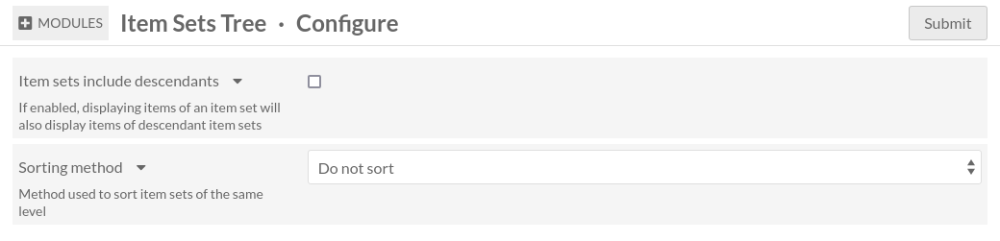

Configuration
There are two different places where you can configure Item Sets Tree: global configuration and site configuration.
Global configuration
You can access global configuration by going to the modules page and click on
the Configure button on the corresponding row.
Here is how the module configuration page looks like:
Item sets include descendants
If enabled, this option will make Omeka act as if items of an item set also belong to this item set’s ascendants. For instance when searching for items, you can limit by item set and the results will also include items of descendants item sets.
Sorting method
By default, item sets of the same level in the tree are sorted by title. You
can disable that by selecting Do not sort. In that case, the order of item
sets will be what you defined in the item set hierarchy
Site configuration
You can access site configuration by going to the site settings page.
In this page there is a section called Item Sets Tree.
Display
This setting controls which item sets will be displayed, depending on which item sets have been added to the site. (See how to add an item set to a site)
Possible values
- Display all item sets without considering what is selected in the Resources tab
This will always display all item sets, no matter which item sets were added to the site.
- Display only item sets selected in the Resources tab
This will display only selected item sets. If selected item sets are connected to each other, they will form a tree as expected. Otherwise, they will form separate trees.
- Display only item sets selected in the Resources tab and their descendants
This behaves the same as
Display selected item sets, but all descendants of selected item sets are included as well.